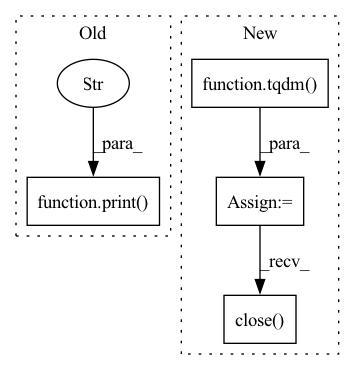

Pattern ID :11088
Before Change
for i in range(10):
new_image = RandomCrop([args.image_size, args.image_size])(image)
new_image.save(f"{image_dir}/{file_name.split(".")[-2]}_{i:03d}.{file_name.split(".")[-1]}")
print("Data split successful." )
if __name__ == "__main__":
parser = argparse.ArgumentParser(description="Prepare database scripts.")After Change
image_file_names = os.listdir(args.images_dir)
// Splitting images with multiple threads
progress_bar = tqdm(total=len(image_file_names), unit="image", desc="Split")
workers_pool = Pool(args.num_workers)
for image_file_name in image_file_names:
workers_pool.apply_async(worker, args=(image_file_name, args), callback=lambda arg: progress_bar.update(1))
workers_pool.close()
workers_pool.join()
progress_bar.close()
def worker(image_file_name, args) -> None:
image = Image.open(f"{args.images_dir}/{image_file_name}").convert("RGB")In pattern: SUPERPATTERN
Frequency: 3
Non-data size: 4
Instances Fragment ID: 38160628
Project Name: lornatang/esrgan-pytorch
Commit Name: 904a78487b8c542178fdd96863f47cf20ff63fc8
Time: 2022-02-07
Author: liuchangyu1111@gmail.com
File Name: scripts/prepare_dataset.py
M Class Name: AnonimousClass
N Class Name: AnonimousClass
M Method Name: main(1)
N Method Name: main(0)
M Parent Class:
N Parent Class:
M File Name: scripts/prepare_dataset.py
N File Name: scripts/prepare_dataset.py
M Start Line: 24
M End Line: 39
N Start Line: 23
N End Line: 38
Before Change
f = open("file_path.zip", "wb")
for chunk in r.iter_content(chunk_size=512):
print("here" )
if chunk:
f.write(chunk)
After Change
response = requests.get(urladdr, stream=True)
total_size_in_bytes= int(response.headers.get("content-length", 0))
block_size = 2048 /Ǘ Kibibyte
progress_bar = tqdm(total=total_size_in_bytes, unit="iB", unit_scale=True)
with open(file_name, "wb") as file:
for data in response.iter_content(block_size):
progress_bar.update(len(data))
file.write(data)
zipfile = ZipFile(file_name)
zipfile.extractall(path=ppath)
progress_bar.close()
os.remove(file_name)
//http_response = urlopen(urladdr)
//total_length = int(http_response.headers.get("content-length"))
//print("here1",total_length) Fragment ID: 38160629
Project Name: microsoft/nn-meter
Commit Name: 9446d4189bace0f8c5bb5a8044bcf4b65e979884
Time: 2021-06-02
Author: lzhani@microsoft.com
File Name: prediction/load_predictors.py
M Class Name: AnonimousClass
N Class Name: AnonimousClass
M Method Name: download_from_url(3)
N Method Name: download_from_url(2)
M Parent Class:
N Parent Class:
M File Name: prediction/load_predictors.py
N File Name: prediction/load_predictors.py
M Start Line: 32
M End Line: 43
N Start Line: 35
N End Line: 58
Before Change
// Save all images
crop_image.save(f"{image_dir}/{file_name.split(".")[-2]}_{index:04d}.{file_name.split(".")[-1]}")
index += 1
print("Data split successful." )
if __name__ == "__main__":
parser = argparse.ArgumentParser(description="Prepare database scripts.")After Change
image_file_names = os.listdir(args.images_dir)
// Splitting images with multiple threads
progress_bar = tqdm(total=len(image_file_names), unit="image", desc="Split")
workers_pool = Pool(args.num_workers)
for image_file_name in image_file_names:
workers_pool.apply_async(worker, args=(image_file_name, args), callback=lambda arg: progress_bar.update(1))
workers_pool.close()
workers_pool.join()
progress_bar.close()
def worker(image_file_name, args) -> None:
image = Image.open(f"{args.images_dir}/{image_file_name}").convert("RGB") Fragment ID: 38160627
Project Name: lornatang/srgan-pytorch
Commit Name: 1d6be4b16a40a639450395e57e387a892f712cf5
Time: 2022-01-11
Author: liuchangyu1111@gmail.com
File Name: scripts/prepare_dataset.py
M Class Name: AnonimousClass
N Class Name: AnonimousClass
M Method Name: main(1)
N Method Name: main(0)
M Parent Class:
N Parent Class:
M File Name: scripts/prepare_dataset.py
N File Name: scripts/prepare_dataset.py
M Start Line: 23
M End Line: 42
N Start Line: 23
N End Line: 38